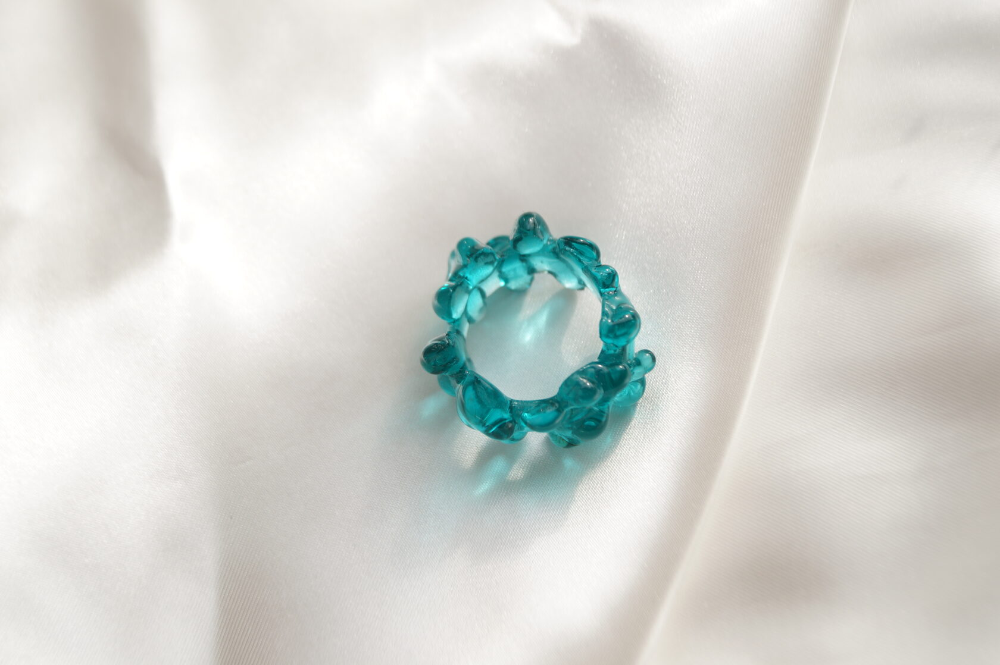

Украшения из стекла, которые вы запомните.Заходите и выбирайте. Каждое украшение уникально и создано вручную с любовью.
Добро пожаловать на сайт, посвященный украшениям из стекла ручной работы! Здесь вы сможете ознакомиться с уникальными изделиями, которые придают вашему облику неповторимость и позволяют выделяться среди остальных.
Одним из больших преимуществ наших украшений является их материал – стекло. Благодаря этому материалу вы можете быть уверены, что ваши изделия не подвергнутся ржавчине и сохранят свой первоначальный вид на долгое время.
Кроме того, изделия из стекла отличаются своими красочными оттенками, благодаря которым они всегда прекрасно видны на любом образе. Вы сможете подобрать украшения, соответствующие вашим предпочтениям в стиле и цветовой гамме, и создавать с помощью них уникальные и неповторимые образы каждый день.
Мы понимаем, что украшения из стекла ручной работы могут быть не для каждого, но если вы хотите выделиться и подчеркнуть свою индивидуальность, то они станут для вас настоящими находками. Наша коллекция предлагает широкий выбор украшений. Каждое изделие создается с любовью и вниманием к деталям, чтобы вы могли получить настоящий произведение искусства.